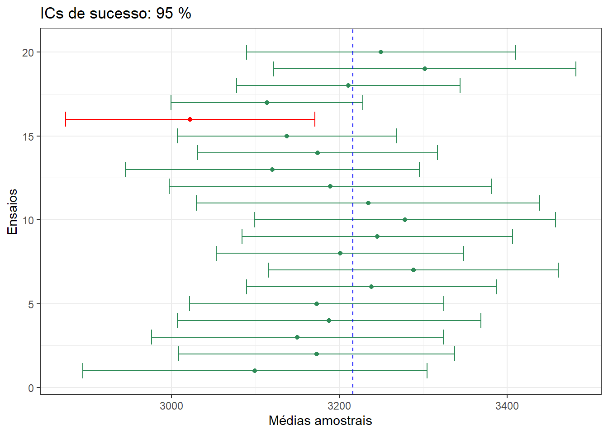
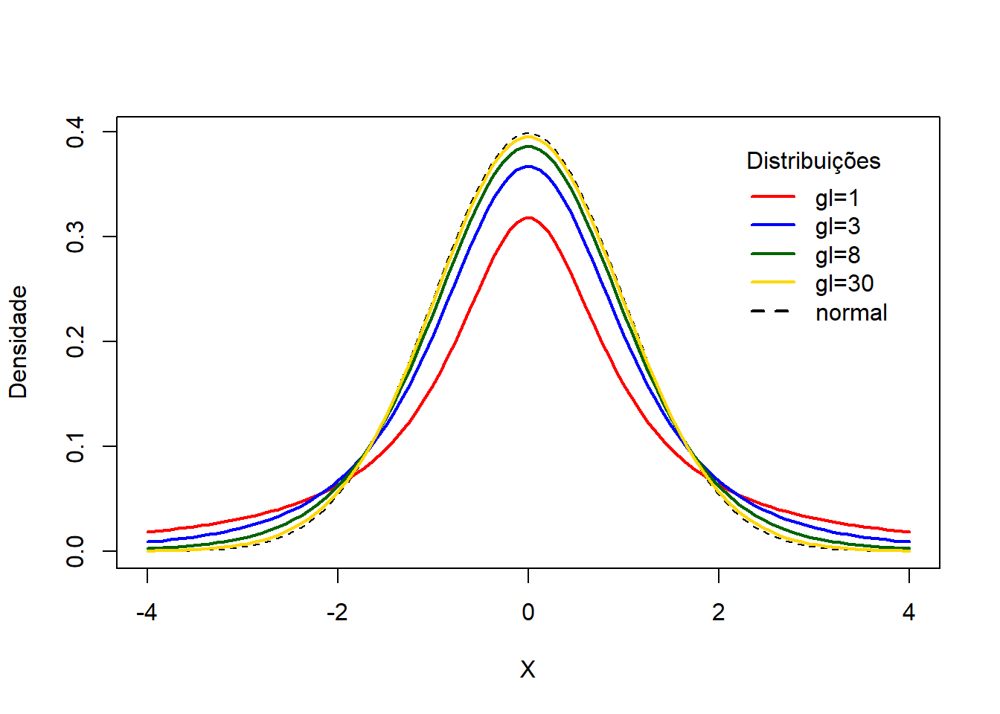
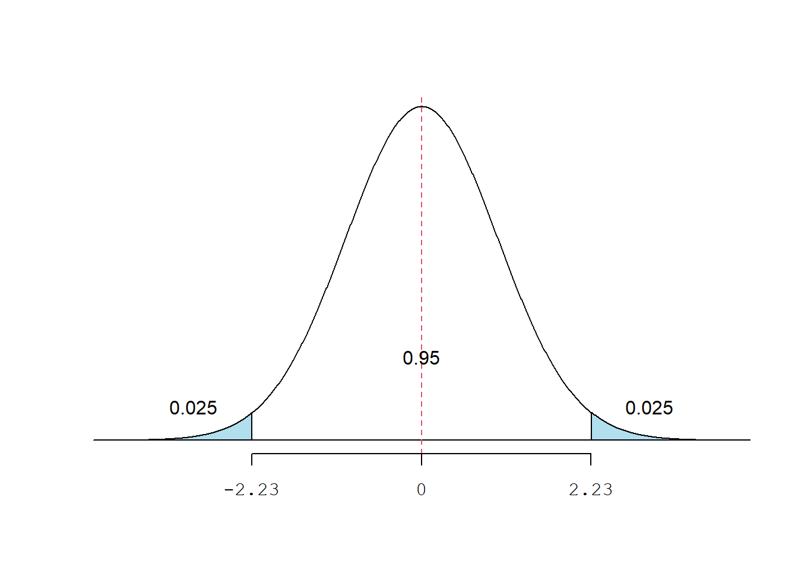

pacman::p_load(DescTools,
dplyr,
ggplot2,
kableExtra,
knitr,
readxl,
Rmisc,
tidyr)10 Estimação
10.1 Pacotes necessários neste capítulo
10.2 Dados
Os dados deste capítulo são os mesmo usados no Capítulo 9, incluídos no arquivo dadosMater.xlsx, considerando apenas os recém-nascidos a termo e a variável altura e pesoRN:
dados <- read_excel("dados/dadosMater.xlsx") %>%
filter(ig>=37 & ig<42) %>%
select(altura, pesoRN)
str(dados)tibble [1,085 × 2] (S3: tbl_df/tbl/data.frame)
$ altura: num [1:1085] 1.5 1.55 1.6 1.58 1.76 1.63 1.54 1.55 1.56 1.51 ...
$ pesoRN: num [1:1085] 3285 3100 3100 2800 3270 ...10.3 Introdução
A estatística inferencial é a parte da estatística que usa os resultados da amostra para tomar decisões e tirar conclusões sobre a população de onde a amostra foi retirada. A estimação e o teste de hipóteses, tomados em conjunto, constituem a inferência estatística.
Estimação é um procedimento pelo qual um valor ou valores numéricos são atribuídos a um parâmetro populacional com base nas informações de uma amostra. Na estatística inferencial, \(\mu\) é chamada de média populacional e p é chamada de proporção populacional. Existem muitos outros parâmetros populacionais, como mediana, moda, variância e desvio padrão, como observado na Seção 9.2.2.
Se houvesse possibilidade de realizar um censo (pesquisa incluindo toda a população de interesse), não haveria necessidade dos procedimentos de estimação. Seria equivalente ao que ocorre em uma eleição, basta contar os votos, para declarar os vencedores da eleição. No entanto, em saúde, realizar censo é um procedimento caro, demorado ou virtualmente impossível. Portanto, geralmente é utilizada uma amostra da população e calculada o valor das estatísticas da amostra apropriada. Baseado nessas estatísticas, é atribuído valores ao parâmetro.
A estatística usada para estimar um parâmetro é chamada de estimador. Assim, a média da amostra, \(\bar{x}\), é um estimador da média da população, \(\mu\); e a proporção da amostra, \(\hat{p}\), é um estimador da proporção da população, p. Estimativa é um valor que a função estimador assume.
10.4 Estimativa Pontual e Intervalo de Confiança
A partir do dataframe dados, serão calculados a média e o desvio padrão da variável pesoRN (peso dos recém-nascidos em g) que, para fins didáticos, serão considerados os parâmetros dessa “população”:
mu <- round(mean(dados$pesoRN, na.rm = TRUE))
sigma <- round(sd(dados$pesoRN, na.rm = TRUE))
print(x = c(mu, sigma))[1] 3216 462A seguir, será extraída, dessa população, uma amostra de n = 30 1 e calculado os mesmas medidas resumidoras, que se constituirão nas estimativas da amostra:
set.seed (1234)
amostra <- dados %>% slice_sample(n = 30)
# Média amostral
x_barra <- round(mean(amostra$pesoRN, na.rm = TRUE))
# Desvio padrão amostral
s <- round(sd(amostra$pesoRN, na.rm = TRUE))
print(c(x_barra, s))[1] 3222 407O valor de 3222g é a média amostral, \(\bar{x}\), usado como um estimativa da \(\mu\), é denominado de estimativa pontual. Como já mencionado anteriormente, espera-se que cada amostra selecionada produza um valor diferente da estatística amostral. Assim, o valor atribuído a uma média populacional, \(\mu\), com base em uma estimativa pontual depende de qual das amostras está sendo usada. Consequentemente, a estimativa pontual atribui um valor a \(\mu\) que quase sempre difere da mesma.
Para melhorar a precisão, usa-se uma estimativa de intervalo. Em vez de atribuir um único valor para o parâmetro populacional, é construído um intervalo, acrescentando ou subtraindo um valor, chamado de margem de erro, à estimativa pontual.
Este procedimento é conhecido como estimação por intervalo e o intervalo construído, estabelecendo um limite inferior e um limite superior em torno da estimativa amostral, é denominado de intervalo de confiança. Desta forma, é possível afirmar que o intervalo de confiança, provavelmente, contém o parâmetro populacional correspondente (Figura 10.1).

A construção do intervalo de confiança depende da obtenção da margem de erro. Este processo necessita de dois fatores:
- do desvio padrão da distribuição amostral, \(\sigma_{\bar{x}}=\frac{\sigma }{\sqrt{n}}\), que em decorrência do Teorema do Limite Central, pode ser escrito \(EP_{\bar{x}}=\frac{s}{\sqrt{n}}\);
- do nível de confiança (NC) atribuído ao intervalo.
Primeiro, quanto maior for o desvio padrão de \(\bar{x}\), maior será a margem de erro subtraída e adicionada à estimativa pontual. Consequentemente, o intervalo de confiança se modifica de acordo com a margem de erro. Quanto maior a margem de erro mais amplo o intervalo de confiança.
Em segundo lugar, a quantidade subtraída e adicionada à estimativa se modifica de acordo o nível de confiança. Para ter uma maior confiança, deve-se aumentar a margem de erro, de acordo com a probabilidade declarada. Quanto maior o nível de confiança, maior a probabilidade. O nível de confiança é mostrado como \((1 - \alpha) \times 100\)%, onde \(\alpha\) é o nível de significância. Tradicionalmente, o valor de \(\alpha\) é igual a 0,05, mas qualquer outro valor pode ser usado.
10.5 Estimação da média populacional: \(\sigma\) conhecido
A margem de erro para a estimativa da média populacional, \(\mu\), quando se conhece o desvio padrão populacional,\(\sigma\), e \(n \ge 30\) ou, mesmo que \(n < 30\), mas a população de onde amostra foi selecionada tem distribuição normal, é a quantidade que é subtraída ou adicionada ao valor da média da amostra, \(\bar{x}\), para obter o intervalo de confiança para \(\mu\). Desta forma, a margem de erro é igual a:
\[ margem \quad de\quad erro\quad(me)= z_{(1-\frac{\alpha}{2})} \times \sigma_{\bar{x}} \]
Ou,
\[ me = z_{(1-\frac{\alpha}{2})} \times \frac{\sigma }{\sqrt{n}} \]
Logo, o intervalo de confiança para a média populacional, \(\mu\), para um nível de confiança (1 - \(\alpha \times 100\))%, é igual a:
\[ IC_{(1-\alpha)}(\mu) \rightarrow \bar{x} \pm me \]
Se objetivo é construir um intervalo de confiança de 95%, a última equação passa a ser:
\[ IC_{(1-\alpha)}(\mu) \rightarrow \bar{x} \pm z_{(0,975)} \times me \]
Onde Z é o valor crítico para o nível de confiança escolhido, obtido da tabela de distribuição normal padrão, e me é a margem de erro (\(z_{0,975} \times erro \quad padrao\)). Um intervalo de confiança de 95% significa que a área total sob a curva normal entre dois pontos em torno da média populacional, \(\mu\), é igual a 95%, ou 0,95. A área das caudas é \(\alpha\), ou seja, cada cauda á igual a \(\frac{\alpha}{2}\) (Figura 10.2)).

Para encontrar o valor de Z para um nível de confiança de 95%, primeiro encontram-se as áreas à esquerda desses dois pontos, \(z_1\) e \(z_2\). Esses dois valores de Z serão iguais, mas com sinais opostos. A área total sob a curva é igual a 1. A área entre \(z_1\) e \(z_2\) é igual a \(1 - \alpha = 0,95\).
A área a esquerda de \(z_1\) é igual a 0,025 e a área a esquerda de \(z_2\) é igual a 1 – 0,025 = 0,975. No R, os valores \(z_1\) e \(z_2\) podem facilmente ser obtidos com a função qnorm():
print(c(qnorm(0.025),qnorm(0.975)), 3)[1] -1.96 1.96Dessa maneira, para uma confiança de 95%, é usado um \(Z = 1.96\), onde:
\[ p(-1,96 \le z \le 1,96) = 0,95 \] Logo,
\[ IC_{95\%}(\mu) \rightarrow \bar{x} \pm (1.96 \times \sigma_{\bar{x}}) \] ou
\[ IC_{95\%}(\mu) \rightarrow \bar{x} \pm (1.96 \times \frac{\sigma}{\sqrt{n}}) \]
10.5.1 Cálculo do intervalo de confiança com \(\sigma\) conhecido
Usando a média dos pesos dos recém-nascidos da amostra (n = 30), \(\bar{x}\)= 3222 g, e o desvio padrão populacional conhecido, \(\sigma\)= 462 g, tem-se que o intervalo de confiança de 95% (IC95%), para o peso dos recém-nascidos a termo na ‘população’ de onde esta amostra é proveniente:
Dados do exemplo para o cálculo
n <- 30
x_barra <- 3222
sigma <- 462Com 95% de confiança a margem de erro é igual a 1,96 vezes o erro padrão da média:
n <- 30
me <- 1.96 * sigma/sqrt(n)
round(me,2)[1] 165.32Basta, agora, adicionar e subtrair a margem de erro da média:
lim_inf <- x_barra - me
lim_sup <- x_barra + me
ic95 <- c(lim_inf, lim_sup)
round(ic95, 1)[1] 3056.7 3387.3Assim, tem-se uma confiança de 95% de que a verdadeira média, esteja incluída no intervalo. O nome para isso é intervalo de confiança de 95% para a média populacional.
10.5.2 Função para calcular IC com \(\sigma\) conhecido
O cálculo manual é simples, mas enfadonho, nos tempos dos computadores. Em decorrência, como o R não tem uma função para encontrar os intervalos de confiança para a média de dados com distribuição normal quando o desvio padrão da população é conhecido, foi criada uma função para cumprir essa ação. Ela necessita dos seguintes argumentos:
- x \(\to\) conjunto de números da amostra
- s \(\to\) desvio padrão populacional
- nc \(\to\) nível de confiança. Padrão: nc = 0.95
IC_z <- function (x, s, nc = 0.975)
{
`%>%` <- dplyr::`%>%`
n <- length(x)
me <- abs(qnorm((1-nc)/2))* sigma/sqrt(n)
df_out <- data.frame( tamanho_amostral = n,
media_amostral = mean(x),
margem_erro = me,
'IC limite inferior'=(mean(x) - me),
'IC limite superior'=(mean(x) + me)) %>%
tidyr::pivot_longer(names_to = "Medidas", values_to ="valores", 1:5 )
return(df_out)
}IC_z(x = amostra$pesoRN, s = sigma, nc = 0.95)# A tibble: 5 × 2
Medidas valores
<chr> <dbl>
1 tamanho_amostral 30
2 media_amostral 3222.
3 margem_erro 165.
4 IC.limite.inferior 3056.
5 IC.limite.superior 3387.Essa função pode ser salva no seu diretório e, quando necessária, pode ser ativada com a função source(), como visto na Seção 4.8.1. Com essa função fica fácil alterar o nível de confiança, por exemplo, para 99%. Isso mudará o Z crítico para:
alpha <- 0.01
p <- 1-(alpha/2)
p[1] 0.995 z_critico <- qnorm(p)
round(z_critico, 2)[1] 2.58Com a função IC_z():
IC_z(x = amostra$pesoRN, s = sigma, nc = 0.995)# A tibble: 5 × 2
Medidas valores
<chr> <dbl>
1 tamanho_amostral 30
2 media_amostral 3222.
3 margem_erro 237.
4 IC.limite.inferior 2985.
5 IC.limite.superior 3458.Observando o IC95% e o IC99%, verifica-se que a amplitude do intervalo aumentou com o crescimento da confiança de 95% para 99%, porque houve um aumento na margem de erro (Figura 10.3).

10.5.3 Interpretação do intervalo de confiança
Se fossem extraídas todas as possíveis amostras de n = 30 da população de recém-nascidos a termo e construído para cada uma delas um intervalo de confiança de 95% em torno de cada média amostral, espera-se que 95% desses intervalos incluirão a média populacional e 5% não incluirão.
O IC95% informa sobre a precisão com que a média amostral estima a média populacional desconhecida 2.
Na Figura 10.4, são mostradas 20 amostras diferentes de tamanho n = 30, dessa população. Junto aparecem os intervalos de confiança de 95% construídos em torno dessas amostras. Observa-se que apenas uma amostra (em vermelho) não inclui a média populacional (linha tracejada vertical em azul). Pode-se afirmar com 95% de confiança que se forem extraídas muitas amostras do mesmo tamanho de uma população e construído intervalos de confiança de 95% em torno das médias dessas amostras, 95% desses intervalos de confiança incluirão a média populacional.

10.6 Estimação da média populacional: \(\sigma\) desconhecido
Com amostras pequenas, usar o modelo normal para construir intervalos de confiança, pode gerar um erro, pois os pressupostos do teorema do limite central não são respeitados. Quando o desvio padrão populacional, \(\sigma\), é desconhecido e o tamanho amostral é pequeno (< 30), a estimação da média populacional é feita usando a distribuição t.
10.6.1 Distribuição t
A distribuição t, desenvolvida por William Sealy Gosset, em 1908, é semelhante à distribuição normal. Como a curva de distribuição normal, a curva de distribuição t é unimodal, simétrica (em forma de sino) em torno da média e nunca encontra o eixo horizontal. A área total sob uma curva de distribuição t é 1 ou 100%. A curva da distribuição t é mais plana do que a curva de distribuição normal padrão. Em outras palavras, ela é mais achatada e mais espalhada. No entanto, conforme o tamanho da amostra aumenta, a distribuição t aproxima-se da distribuição normal padrão.
O formato de uma curva de distribuição t particular depende do número de graus de liberdade. O número de graus de liberdade (gl) para uma distribuição t é igual ao tamanho da amostra menos um, ou seja, \(gl=n-1\), veja Seção 6.3.4.3.
O número de graus de liberdade é o único parâmetro da distribuição t. Há uma diferente distribuição t para cada número de graus de liberdade, portanto, a distribuição t se constitui em uma família de distribuições (Figura 10.5).

Da mesma maneira que a distribuição normal padrão, a média da distribuição padrão t é 0. Entretanto, ao contrário da distribuição normal padrão, cujo desvio padrão é 1, o desvio padrão de uma distribuição t é \(\sqrt{\frac{gl}{gl-2}}\) , para gl > 2, sempre é maior do que 1. Assim, o desvio padrão de uma distribuição t é maior do que o desvio padrão da distribuição normal padrão.
Os valores de \({t}_{crítico}\) podem ser obtidos usando a função qt() que usa os seguintes argumentos:
- p \(\to\) probabilidade, igual a \(1 - \frac{\alpha}{2}\), considerando-se bicaudal e \(1 - \alpha\) quando unicaudal;
- df \(\to\) graus de liberdade;
- lower.tail \(\to\) lógico; se TRUE, informa a probabilidade da cauda inferior. O padrão é TRUE.
Assim, o valor do \({t}_{crítico}\) para \(gl=10\) é:
alpha <- 0.05
p <- 1 - (alpha/2)
gl = 10
t <- qt(p = p, df = 10, lower.tail = TRUE)
round(t, digits = 2)[1] 2.23A área compreendida entre \(\pm\) 2.23$ é igual a 95% (Figura 10.6):
\[ p(-2,23\le t\le 2,23)=0,95 \]

Quando se considera apenas uma das caudas (unicaudal ou unilateral), o valor do \({t}_{crítico}\) para \(gl=10\) é
t1 <- qt(p = 0.95, df = 10, lower.tail = TRUE)
round(t1, digits = 2)[1] 1.81Assim, a área abaixo de 1.81 é igual a 95% (Figura 10.7).
\[ p(t\le 1,81)=0,95 \]

10.6.2 Cálculo do intervalo de confiança com \(\sigma\) desconhecido
Serão utilizados nesta seção, os dados da altura de mulheres, obtidos na Seção 10.2. Suponha-se que os parâmetros sejam desconhecidos. Para estimar esses parâmetros, selecionou-se uma amostra de n = 30 desse conjunto dados. Tomando essa amostra, calcula-se a sua média e o seu desvio padrão:
set.seed(2345)
amostra1 <- dados %>%
slice_sample(n = 30)
x_barra1 <- mean(amostra1$altura, na.rm = TRUE)
s1 <- sd(amostra1$altura, na.rm = TRUE)
print(round(c(x_barra1, s1),3))[1] 1.577 0.062A maneira mais intuitiva de estimar a média da população com base na amostra, é, simplesmente, calcular a média e o desvio padrão. Entretanto, para uma maior precisão, é sempre importante calcular o intervalo de confiança.
10.6.2.1 Cálculo manual do IC
Quando o desvio padrão da população (\(\sigma\)) não é conhecido, pode-se usar o seu estimador que é o desvio padrão da amostra (s), respeitando os pressupostos (1). Então, o erro padrão da média (\(\sigma_{\bar{x}}\)) pode ser estimado pelo \(EP_{\bar{x}}\).
\[ EP_{\bar{x}}=\frac{s}{\sqrt{n}} \]
O intervalo de confiança para a \(\mu\) para um nível de confiança (NC) de \((1 – \alpha) \times100\)% é igual a:
\[ IC_{NC}(\mu)\rightarrow x\pm (t_{({1-\frac{alpha}{2})} } \times \frac {s}{\sqrt{n}}) \]
Quando o tamanho amostral é grande, o valor de t se aproxima do valor de z, portanto, em situações em que não se conhece o desvio padrão populacional, não há muita diferença se houver uma aproximação de t para z (Tabela 10.1).
| z | n | gl | t |
|---|---|---|---|
| 1,96 | 5 | 4 | 2,57 |
| 1,96 | 10 | 9 | 2,23 |
| 1,96 | 30 | 29 | 2,04 |
| 1,96 | 50 | 49 | 2,01 |
| 1,96 | 100 | 99 | 1,98 |
| 1,96 | 200 | 199 | 1,97 |
| 1,96 | 500 | 499 | 1,96 |
| 1,96 | 1000 | 999 | 1,96 |
A amostra1 de n = 30, \(\overline x\) = 1.577m e \(s\) = 0.062m. Essas estimativas servirão para o cálculo do intervalo de confiança, usando uma distribuição t bicaudal e um nível de significância \(\alpha = 0,05\).
n1 <- length(amostra1$altura)
alpha <- 0.05
p <- 1 - alpha/2
# Graus de liberdade
gl <- n1 - 1
# Valor t crítico
tc <- qt(p, gl, lower.tail = TRUE)
# Erro padrão
EP1 <- round(s1/sqrt(n1),3)
print(round(c(tc, EP1),3))[1] 2.045 0.011Com esses dados, calcula-se o intervalo de confiança de 95%:
me1 <- tc*EP1
lim_inf <- x_barra1 - me1
lim_sup <- x_barra1 + me1
ic95 <- c(lim_inf, lim_sup)
round(ic95, 2)[1] 1.55 1.6010.6.2.2 Cálculo usando uma função do R
O R possui algumas funções que calculam o intervalo de confiança para variáveis numéricas, baseadas na distribuição t. Entre elas, a função CI(), incluída no pacote Rmisc. Esta função tem dois argumentos:
- x ⟶ vetor de dados;
- ci ⟶ intervalo de confiança a ser calculado
IC95 <- CI(amostra1$altura, ci = 0.95)
round(IC95, 2)upper mean lower
1.60 1.58 1.55 10.7 Intervalo de Confiança para uma proporção populacional
10.7.1 Dados para estimar a proporção populacional
Aqui, será utilizada uma amostra aleatória de n = 60 do conjunto de dados dadosMater.xlsx (sem filtro para os recém-nascidos a termo) para estimar a proporção de mulheres fumantes.
set.seed(2346)
dados <- read_excel("dados/dadosMater.xlsx") %>%
select (fumo) %>%
slice_sample(n = 60)
str(dados)tibble [60 × 1] (S3: tbl_df/tbl/data.frame)
$ fumo: num [1:60] 2 2 1 2 2 2 2 2 2 1 ...A seleção mostra que temos 60 observações da variável fumo e que a mesma está classificada como numérica (num), 1 e 2. Onde 1 representa as mulheres fumantes. A variável é categórica e deve ser transformada para fator.
dados$fumo <- factor (dados$fumo,
levels = c (1,2),
label = c ("fumante", "não fumante"))10.7.2 Cálculo da estimativa pontual da proporção
Nessa amostra, a proporção de fumantes é:
tab <- table(dados$fumo)
tab
fumante não fumante
14 46 tabFumo <- round (prop.table (tab), 3)
tabFumo
fumante não fumante
0.233 0.767 10.7.3 Cálculo do intervalo de confiança para a proporção
Cálculo manual com aproximação normal
1ª etapa: verificar a premissa de que quando a proporção populacional é desconhecida a proporção pontual (\(\hat p\)) e o seu complemento (\(\hat q = 1 - \hat p\)) multiplicados, cada um, por \(n\), devem ser maior do que 5.
n <- length(dados$fumo)
(tabFumo) * n
fumante não fumante
13.98 46.02 Como se observa, ambos os valores são maiores do que 5.
2ª Etapa: O intervalo pode ser estimado pela distribuição normal e é necessário calcular o z_crítico:
alpha <- 0.05
p <- 1 - alpha/2
zc <- qnorm (p, mean = 0, sd = 1)
round(zc, 2)[1] 1.963ª Etapa: Cálculo do erro padrão da proporção (\(\sqrt \frac {\hat p \times \hat q}{n}\)) e da margem de erro (veja também a Seção 9.6):
# Extração da proporção amostral do tabFumo
prop <- tabFumo [1]
# Cálculo do EP amostral
EP <- sqrt((prop * (1 - prop))/n)
# Cálculo da margem de erro(me)
me <- zc * EP
# dados necessários para o cálculo do IC95%
print(c(prop, me), digits = 3)fumante fumante
0.233 0.107 4ª Etapa: Intervalo de confiança
ic_prop <- c((prop - me), (prop + me))
round(ic_prop, 3)fumante fumante
0.126 0.340 Cálculo usando uma função
O chamado Intervalo de Confiança Exato corrigem as deficiências da aproximação normal. O R tem uma função para este cálculo: BinomCI() do pacote DescTools(2). É preferível usar o método de Clopper e Pearson que fornece o IC exato.
Os argumentos da função BinomCI() são:
- x \(\to\) é o número de desfechos, sucessos;
- n \(\to\) é o tamanho da amostra, número de ensaios;
- p \(\to\) probabilidade, hipótese nula; se ignorada o padrão é 0,50;
- conf.level \(\to\) nível de confiança, o padrão é 0.95;
- method \(\to\) possui vários métodos para calcular intervalos de confiança para uma proporção binomial como: “clopper-pearson” (exact interval), “wilson”, “wald”, “agresti-coull”, “jeffreys”, “modified wilson”, “modified jeffreys”, “arcsine”, “logit”, “witting”, “pratt”. O método padrão é o de “wilson”. Qualquer outro método, há necessidade de solicitar;
- sides \(\to\) hipótese alternativa padrão “two.sided” (bilateral), mas pode ser “right” ou “left” (unilateral a direita ou a esquerda, respectivamente).
x <- tab[1]
IC <- BinomCI (x,
n,
conf.level = 0.95,
method = "clopper-pearson")
round(IC, 3) est lwr.ci upr.ci
[1,] 0.233 0.134 0.36Observe que existe uma pequena diferença entre os valores da aproximação normal e o exato, com o método de “clopper-pearson”
Repetindo, é importante lembrar que toda vez que for extraída uma nova amostra, o resultado será um conjunto de números diferentes e, em consequência, a média será diferente. Por isso, se for importante repetir o mesmo resultado, deve-se usar a função
set.seed(). Consulte a Seção 7.7.2.4.↩︎Anteriormente, mostrou-se a media populacional por uma questão didática. A regra é não se conhecer a média populacional, razão da importância do intervalo de confiança↩︎